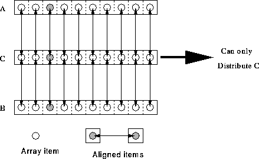

Consider the following simple example,
REAL, DIMENSION(10) :: A, B, C !HPF$ ALIGN (:) WITH C(:) :: A, B
This is similar to the previous example. A, B and C
are aligned so A(i) and B(i) reside on same
processor as C(i). Because of the `: 's,
A, B and C must conform.

Figure 25: Visualisation of Alignment
In Figure 25, the arrowed lines show alignment of elements and the shaded blobs reiterated this. The processor that receives one of the shaded blobs will also receive the others. Since C is the align-target it is the only object that may be distributed.
The alternative alignment syntax
!HPF$ ALIGN (j) WITH C(j) :: A, B
implies the same alignment, (ie, that A(j) and B(j) will reside on same processor as C(j)), but does not imply that all arrays are the same size and shape. It does, however, imply that C is the same size or larger than A and B in each dimension. (If this was the case then A(1) and B(1) are aligned with C(1) and so on until the extents of A and B are reached. The j is best thought of as a `symbol' and not as a variable. j does not need a value at this point in the program. It is like saying
Colon notation makes a slightly stronger statement than symbol notation.